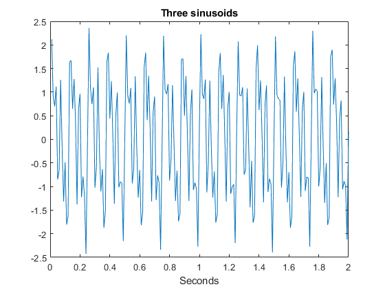
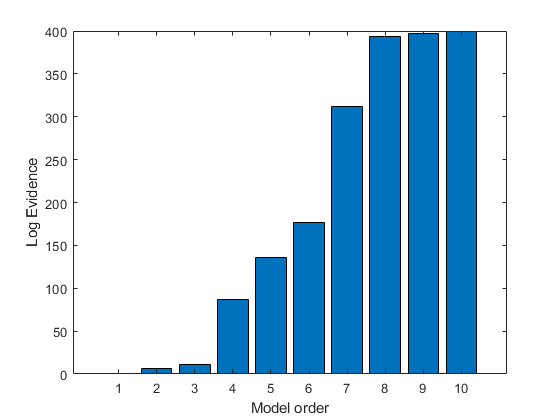
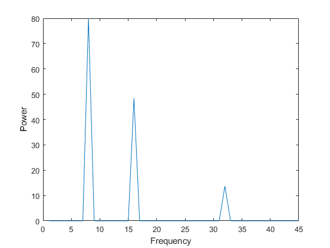

N=200;
fs=100;
t=[1:1:N]'/fs;
f(1)=16;
f(2)=8;
f(3)=32;
x=zeros(N,1);
for i=1:3,
x=x+sin(2*pi*f(i)*t);
end
x=x+0.1*randn(N,1);
figure
plot(t,x);
xlabel('Seconds');
title('Three sinusoids');
for p=1:10,
disp(sprintf('Now fitting model with p=%d coefficients',p));
ar=spm_ar (x,p,0);
logev(p)=ar.fm;
end
logev=logev-min(logev);
figure
bar(logev);
ylabel('Log Evidence');
xlabel('Model order');
[max_log, max_p]=max(logev);
disp(sprintf('AR-%d model has highest evidence',max_p));
ar=spm_ar (x,max_p,0);
freq=[1:45];
p=spm_ar_freq(ar,freq,fs);
figure
plot(freq,p);
xlabel('Frequency');
ylabel('Power');
Now fitting model with p=1 coefficients
Now fitting model with p=2 coefficients
Now fitting model with p=3 coefficients
Now fitting model with p=4 coefficients
Now fitting model with p=5 coefficients
Now fitting model with p=6 coefficients
Now fitting model with p=7 coefficients
Now fitting model with p=8 coefficients
Now fitting model with p=9 coefficients
Now fitting model with p=10 coefficients
AR-10 model has highest evidence
  